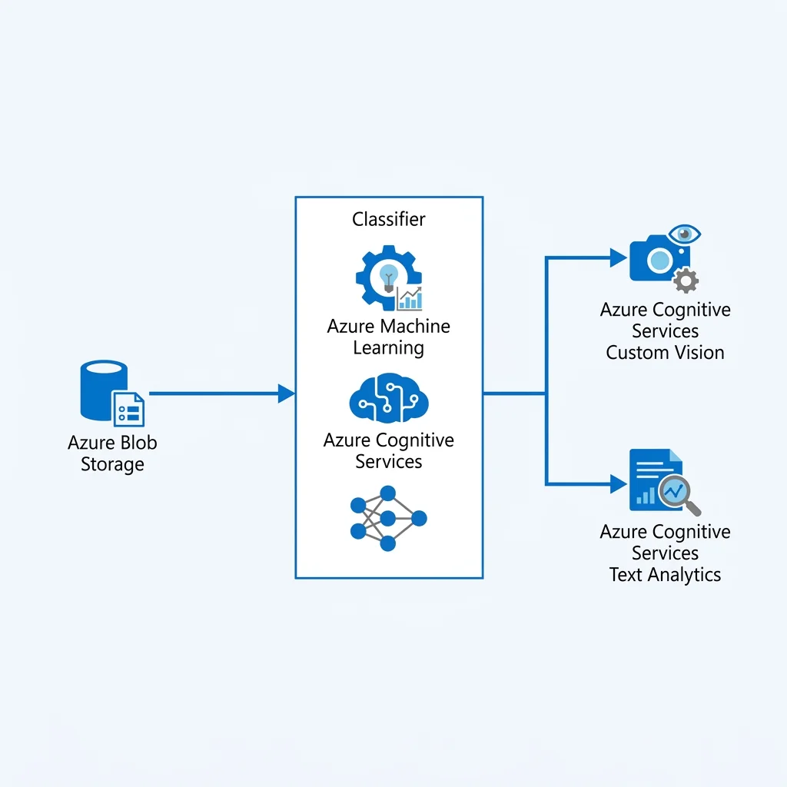
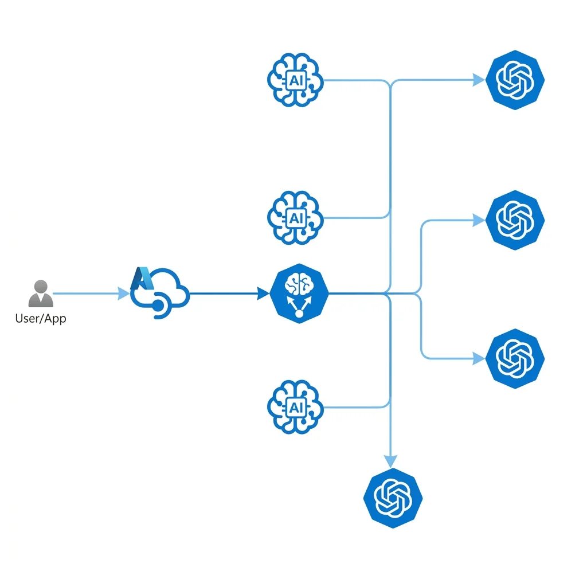
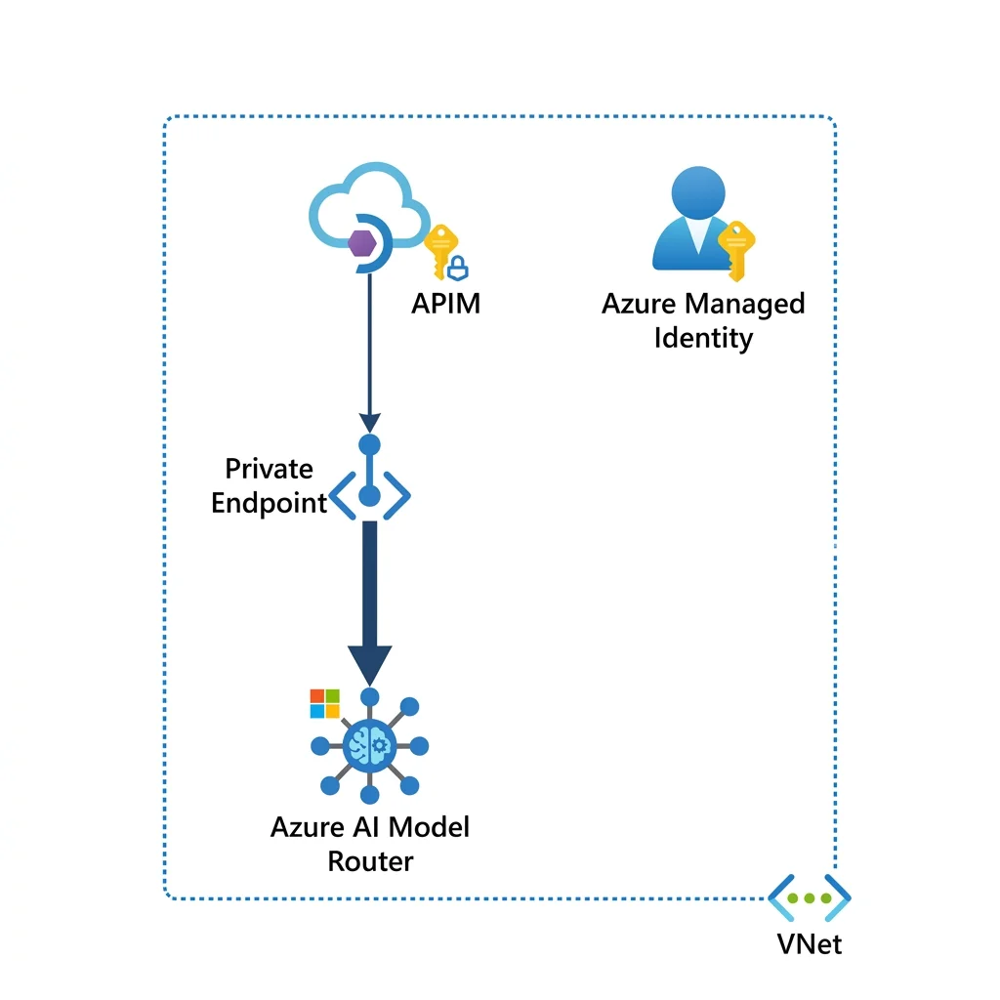

In This Article
- Executive Summary
- Director-Level Governance
- How Model Router Works
- Sweden Central Strategy
- Workload Mapping
- Architectural Advantages
- Disadvantages & Risks
- FinOps Cost Calculator
- Throughput Planning
- Enterprise AI Pattern
- When to Use Model Router
- When Not to Use It
- Orchestration Choices
- Best Practices Framework
- Decision Framework
- What Can Go Wrong
- Final Recommendation
- Deployment Checklist
- References
Enterprise AI is moving beyond the "pick one best model" mindset. That approach is already outdated. The critical architectural question is no longer which LLM is best, but rather: Which model should handle which task, under what controls, at what cost, in which region, and with what audit trail?
This article provides a rigorous enterprise architecture view on Azure AI Foundry Model Router. We analyze when to deploy this managed decision layer, when to bypass it, how to handle Sweden Central region constraints, and how to govern token cost and latency within an enterprise AI platform.
Executive Impact Summary
Business Problem
Workload fragmentation leads to hardcoded model selection in application code, causing massive over-provisioning (e.g., routing support triage to expensive models) and brittle integration pipelines.
Strategic Play
Deploy Azure AI Foundry Model Router as a managed abstraction layer. Let the platform dynamically select the optimal model based on prompt complexity, cost/quality modes, and compliance limits.
Executive ROI
- Cost Optimization: Dynamically routes simple prompts to cheaper models, reserving premium tokens for complex tasks.
- Faster Time-to-Market: Decouples model selection from app code. Upgrade AI models without redeploying applications.
The True Enterprise Metric:
Evaluate cost per accepted business outcome (factoring in latency, quality, and human rework) instead of raw token cost.
Director-Level Governance View
The Model Router discussion should not be framed around which model to use. That is too narrow. A better architecture question is: What AI operating model gives us the right balance of quality, cost, latency, compliance, observability, and business accountability?
Common enterprise AI failure patterns include:
- Every workflow defaults to the most expensive model out of developers' convenience.
- Critical business decisions are routed to low-capability models to meet arbitrary budgets.
- Model selection is buried inside deep application code, invisible to platform administrators.
- Governance teams approve an AI use case but fail to regulate the model pool behind it.
- Teams confuse dynamic model routing with AI platform governance.
Architectural Mandate
The goal is not to use the biggest model. The goal is to use the right model, for the right task, with the right controls, placed inside a governed platform pattern.How Azure AI Foundry Model Router Works
Model Router acts as a model decision layer. Instead of directly calling a fixed endpoint, an application calls the Model Router deployment. The router uses an internal classifier to estimate prompt complexity before selecting a model from the configured subset — the routing logic is managed by the platform and is not directly configurable by the developer. The selected model is disclosed in the API response model field, giving downstream observability tooling a clear audit signal.

Microsoft documents three primary routing modes:
To understand the operational boundary, let's contrast the Model Router with the AI Gateway:
Model Router: The Model Decision Layer
- Optimizes individual prompt execution path
- Evaluates prompt complexity dynamically
- Selects a cost-effective eligible model based on routing mode, prompt complexity, and the configured model pool.
- Operates inside the regional workspace boundary
- Manages subset eligibility for local workloads
AI Gateway: The Access and Governance Layer
- Enforces authentication, authorization, and audit logs
- Applies global rate limits and user-level token quotas
- Provides semantic caching and circuit breaking
- Runs as a managed API gateway layer, with tier-dependent scaling, regional deployment, policy, and observability capabilities.
- Applies prompt and response safety policies, including Azure AI Content Safety integration where configured.
Sweden Central Regional Strategy
As of the Microsoft documentation reviewed on 20 May 2026, Model Router deployment requires the Azure AI Foundry resource to be in:
As of the current Microsoft documentation, Model Router deployment requires the Azure AI Foundry resource to be in East US 2 or Sweden Central. This should be validated before production rollout because Azure AI Foundry feature availability can vary by model, deployment type, quota, and region.
For European workloads, Sweden Central with Data Zone Standard is a strong starting point when EU data-zone processing is required. It supports alignment with EU data-boundary expectations, but final sovereignty and compliance posture must still be validated against the customer's legal, regulatory, and contractual requirements.
Workload Mapping: Task Complexity vs. Model Need
Enterprise AI workloads are rarely uniform. Using one fixed model for everything is highly inefficient. Here is how typical tasks should be mapped:
Architectural Advantages
1. Reduces Hardcoded Selection Logic
Without Model Router, teams often build brittle application code containing nested conditional switches to select endpoints based on task name or budget rules. Model Router encapsulates this, presenting a stable endpoint to application developers while letting platform engineers tweak model weights behind the scenes.
2. Enforces Approved Model Subsets
Model Router restricts the pool of eligible models to an approved subset. While it honors the configured deployment type and data-zone boundaries where applicable, enterprise-wide security and compliance enforcement still require broader platform controls such as Azure Policy, RBAC, API gateway policy, logging, private networking, and procurement controls. The router is not a standalone governance plane.
Provider caveat: Some model families may have additional deployment requirements. For example, model families outside the default OpenAI path may need separate deployment or provider-specific setup before Model Router can route to them. Validate this during implementation instead of assuming every catalog model is immediately routable.
3. Supports Model Abstraction
Model abstraction is critical. When application business logic directly binds to specific model IDs, model deprecation breaks production code. The Model Router exposes a stable, abstracted endpoint while platform engineers update underlying models seamlessly.
4. Managed Model-Level Failover
If a model endpoint experiences elevated latency or throttling, the Model Router can redirect requests to an alternative capable model in the subset. However, this is not a substitute for full network-level disaster recovery (using APIM or Azure Front Door).
Disadvantages and Risks
- Less Deterministic Behavior: Because prompts are routed dynamically, prompt engineers cannot guarantee identical output syntax over time. For highly regulated decision chains, bypass the router and use a direct pinned model.
- Hidden Context Window Constraints: The context window of the router does not automatically match the largest model in the pool. When parsing huge contract drafts, check your subset limitations.
- FinOps Tracking Challenges: Dynamic routing can hide which models are generating cost. If "Quality" mode is overused, token budgets can expire rapidly without developers realizing it.
- Multimodal Limitations: While the router can take image inputs when vision-enabled models are in the pool, routing decisions are purely based on the text prompt context. Audio inputs are not supported.
Version drift and auto-update risk
Model Router versions can introduce a different set of underlying models. If auto-update is enabled, routing behavior, output quality, latency, and cost profile can change over time.
Production workloads should treat Model Router version updates like controlled platform changes. Evaluate the new router version against representative prompts before promotion. Track selected model, cost per workflow, latency, grounding quality, and human rework rate.
FinOps Cost Calculator: Sweden Central Planning
Model Router is billed based on token consumption rather than fixed hourly instances. The calculation uses variable parameter P, which represents the input price per million tokens (based on your Azure Enterprise Agreement or public rates).
Core Planning Formula
Hourly cost =(input tokens per hour / 1,000,000) × current Model Router input price per 1M tokens Monthly cost =
Hourly cost × active usage hours per month
Interactive FinOps Estimator
The FinOps lesson is clear: The cost problem is not the router itself, but uncontrolled prompt token volume and unmanaged workflow loops. Establish metric logging for the cost per accepted business outcome rather than tracking raw token costs alone. A low-cost model output that needs human rework is not cheap. A higher-cost model that produces a trusted answer in one pass may be cheaper at the workflow level.
Throughput Planning for Sweden Central
Cost is only one side of design; throughput limits are the other. Before a production rollout, architects must validate the available Requests Per Minute (RPM) and Tokens Per Minute (TPM) quota configurations.
Ask these strategic planning questions:
- What is the peak expected requests per minute vs average load?
- Which business processes are interactive (requiring immediate, low-latency responses) and which can run asynchronously?
- What is the downstream fallback when the quota is exhausted (HTTP 429)?
- Do you need to request quota allocations or Provisioned Throughput (PTU) before launching?
Always design for peak load concurrency and apply exponential backoff retry behaviors inside the orchestration layer — specifically in the middleware that wraps Model Router calls (e.g., a Semantic Kernel plugin, LangChain chain, or a custom APIM retry policy). This retry logic must live at the call site, not inside Model Router itself.
Recommended Enterprise AI Architecture Pattern
Model Router must reside within a structured, multi-layer gateway topology. It should not be exposed directly to client applications. For true enterprise scale, Azure API Management (APIM) should sit in front of the Model Router. This pattern enables cross-region disaster recovery (via APIM backend pools mapping to distinct Model Router deployments), strict rate limiting (to protect Provisioned Throughput limits), and centralized Entra ID JWT validation before traffic ever reaches the router layer.

Secure Network Topology
A production-ready deployment must implement strict network boundaries, utilizing Private Endpoints to isolate the Model Router from the public internet and leveraging Managed Identities to authorize API Management requests.

When to Use Model Router
Deploy Model Router when your workload has variable complexity, meaning different incoming queries require different degrees of cognitive capability.
When Not to Use Model Router
Bypass or tightly constrain the Model Router in scenarios where strict determinism, regulation, or specific performance constraints exist.
Model Router vs. Other LLM Orchestration Choices
Evaluate these options based on your team's engineering capacity and compliance profile:
- Option 1: Direct Model Deployment - Best when control and deterministic behavior matter more than flexibility. Requires more application code to handle routing manually.
- Option 2: Model Router - Managed, cloud-native abstraction that reduces code complexity and automates cost optimization for mixed-complexity workloads.
- Option 3: Custom Orchestration - Building custom routing code (using Semantic Kernel or LangChain). Necessary for multi-cloud strategies, but introduces significant maintenance overhead.
- Option 4: Fine-Tuned Model - Reserved for highly domain-specific tasks (e.g. medical terminology) where base models consistently fail.
Best Practices for Using Model Router
1. Start with Balanced Mode
Balanced mode provides the safest starting profile. Monitor performance, cost, and latency metrics for 14 days before switching to Cost or Quality modes.
2. Classify Prompts by Business Criticality
Never route all prompts blindly. Intercept prompts at the orchestration layer and map them:
- Low risk tasks (Metadata extraction, triage) → Cost Mode.
- Medium risk tasks (Summarization) → Balanced Mode.
- High risk tasks (Financial advising) → Quality Mode / Direct Pinned Model.
3. Use Approved Model Subsets
Define a subset matching your region's compliance lanes. In Sweden Central, restrict the pool to models available under the Data Zone Standard deployment type in your approved region. Verify this list directly in Azure AI Foundry — there is no static public certification registry.
4. Log the Selected Model
Do not let the router become a black box. This is practical because the selected underlying model is disclosed in the API response through the model field. Applications should capture this value for audit, FinOps, troubleshooting, and quality analysis. Downstream logging schemas must capture this for auditability:
{
"routingMode": "balanced",
"selectedModel": "model-name",
"promptClass": "high-risk",
"inputTokens": 8500,
"outputTokens": 1200,
"latencyMs": 7400,
"userRating": 4,
"humanOverride": false
}5. Build an Evaluation Harness
Establish automated evaluations tracking hallucination rate, grounding accuracy, and response consistency. When the router switches models dynamically, automated tests must verify that response quality remains within tolerance.
6. Separate Retrieval from Reasoning
The Model Router selects models for reasoning capabilities. Enterprise context must be retrieved beforehand (via RAG indexing) and injected as grounded context, rather than relying on the LLM's static training data.
7. Do Not Use LLMs for Everything
Deterministic validations (null checks, range validation, pattern matching) should be run directly in code. Using LLMs for simple code-level checks is slow, expensive, and insecure.
8. Design Fallback Explicitly
Model Router handles model selection but not application resilience. Incorporate retry policies, circuit breakers, and alternate regions (e.g., East US 2) for disaster recovery planning.
Practical Decision Framework
Use this interactive decision advisor or switch to the quick lookup table to evaluate target patterns for model routing:
What Can Go Wrong in Production
In practice, the most common mistake I see is teams treating Model Router as a governance layer — when in reality it is a cost and complexity optimization layer sitting inside a broader governed platform. The governance has to be built around it, not delegated to it.
Model routing can fail as an operating model if teams do not control the surrounding platform.
Common failure patterns include:
- Treating Model Router as a full AI governance layer.
- Allowing uncontrolled model subsets in production.
- Ignoring router version changes and auto-update behavior.
- Measuring only token cost instead of cost per accepted outcome.
- Sending large documents directly to the model instead of using extraction, chunking, retrieval, and grounding.
- Using dynamic routing for regulated workflows that require a fixed approved model.
- Failing to log the selected model, token usage, latency, and workflow context.
- Ignoring developer friction: Local testing of routing logic is difficult because developers cannot run the internal classifier locally. Dev-specific router deployments are required.
- Assuming data-zone alignment equals complete legal sovereignty.
The fix is not to avoid Model Router. The fix is to use it inside a governed AI platform with gateway controls, model approval, observability, evaluation, and human accountability. A useful rule of thumb: if your AI platform were audited tomorrow, could you answer which model processed which request, at what cost, with what output, reviewed by whom? If not, the router is running without governance — and that is the real risk.
Final Recommendation
Deploy Azure AI Foundry Model Router as the default decision layer for flexible, mixed-complexity workflows to minimize application code coupling. However, do not treat it as a blanket solution. Keep high-control, audited, or benchmarking processes pinned directly to specific endpoints.
For region strategy, validate Model Router support early. For European workloads, Sweden Central with Data Zone Standard is a strong starting point when EU data-zone processing is required. It supports alignment with EU data-boundary expectations, but final sovereignty and compliance posture must still be validated against the customer's legal, regulatory, and contractual requirements.
Where Model Router Fits in Your AI Platform Maturity
Think of enterprise AI platform adoption in stages: Stage 1 (Ad-hoc) teams call model APIs directly from application code. Stage 2 (Managed) teams introduce abstraction layers like Model Router to reduce coupling and optimize cost automatically. Stage 3 (Governed) teams add gateway controls, policy enforcement, and full observability. Stage 4 (Optimized) teams run continuous evaluation, automated model promotion, and FinOps feedback loops. Model Router is a Stage 2 pattern. It is a prerequisite to Stage 3, not a replacement for it.Interactive Architecture Decision Tree
Not sure if Model Router fits your specific workload? Use this interactive consulting widget to find out.
Does your workload strictly require processing by a single, specific model version for regulatory reasons?
Bypass the Router
If regulatory or audit rules mandate executing on a perfectly static environment, do not introduce a dynamic routing layer.
Deployment Checklist
References
- Microsoft Learn: Model Router for Microsoft Foundry Concepts
- Microsoft Learn: How Model Router Works in Microsoft Foundry
- Microsoft Learn: How to Use Model Router for Microsoft Foundry
- Microsoft Learn: Microsoft.CognitiveServices Accounts Deployments ARM/Bicep Reference
- Microsoft Learn: Azure API Management AI Gateway Capabilities
- Microsoft Learn: Data, Privacy, and Security for Foundry Models Sold by Azure
Ready to operationalize your Azure journey?
Standardizing model layer abstraction is one of the pillars of high-fidelity cloud systems. Let's discuss how to align your AI platform architecture with FinOps controls and regulatory compliance.